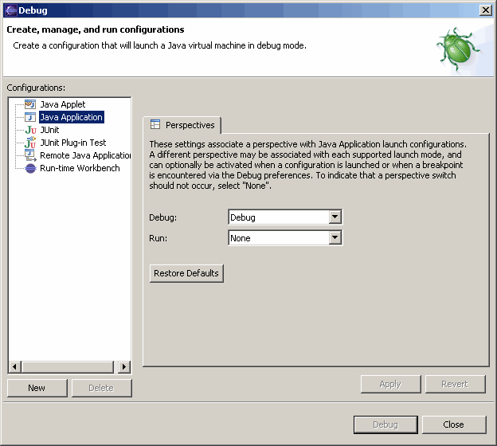
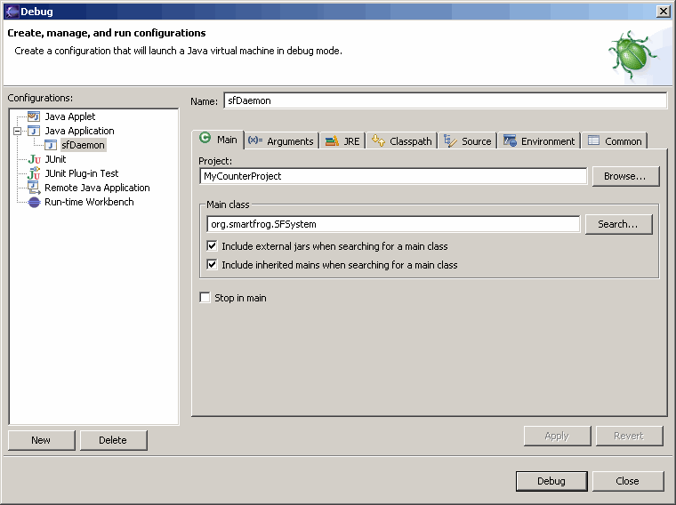
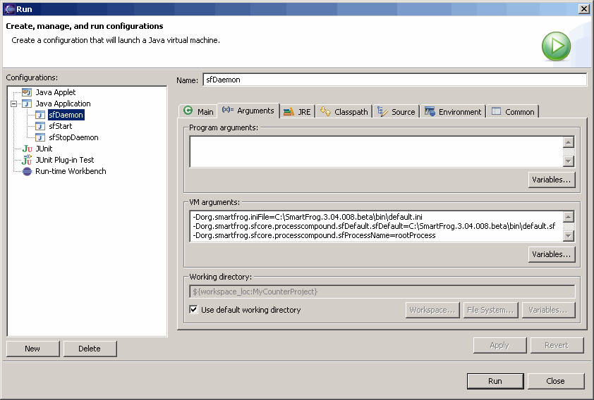
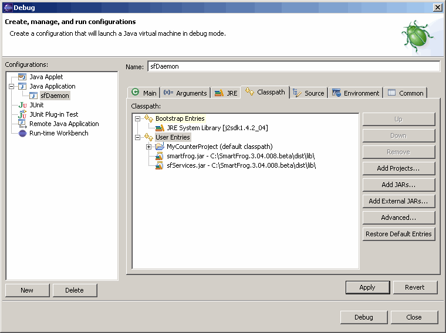
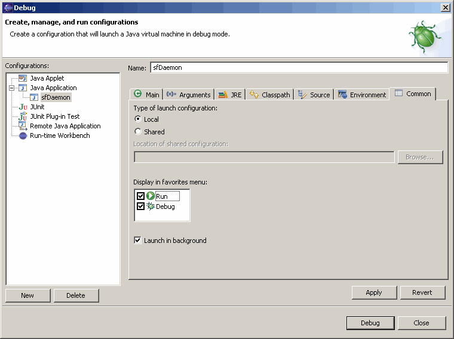
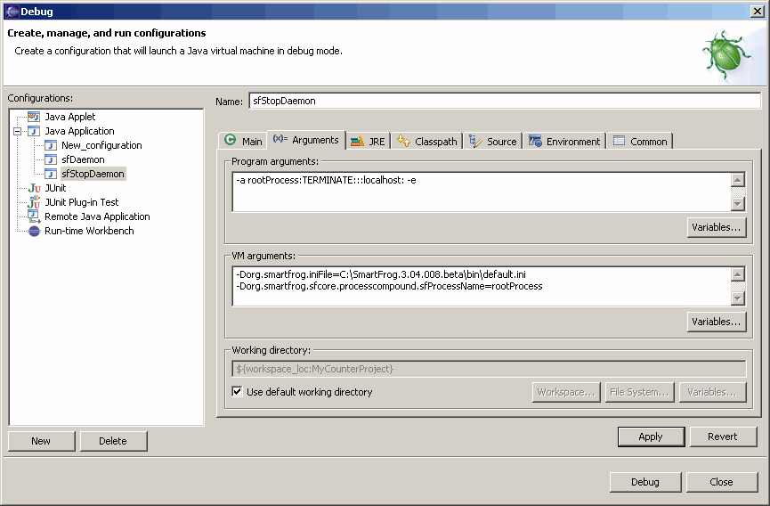
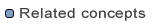

Creating SmartFrog run configurations
General description
In addition to the icons on the SmartFrog Eclipse plug-in's toolbar that allow you to start and stop the SmartFrog daemon and SmartFrog applications (as discussed in the Testing a SmartFrog application section), you can create run configurations that also make it easy for you to launch and debug your SmartFog Java applications. You specify a name for the configuration and define your runtime parameters and classpath specifications for the SmartFrog daemon or some other specific Java application just once. The specified configuration name becomes one of the options when you select Run... or Debug... from the Run option on the menu bar allowing you to run your application in a single step.
How to create a run configuration to start the SmartFrog daemon
Purpose
To create a run configuration to start the SmartFrog daemon.
Procedure
- To launch the run configurations dialog, on the SmartFrog Eclipse
plug-in menu bar, select Run > Debug ....
This dialog allows you to create, manage, and run configurations.

- In the left pane of the dialog page,
select Java Application
and click New. This launches a page where you can define
various run specifications.
- On the Main tab, you must specify the name and main class for your configuration. The Project: field can be left blank. Since we are defining this
configuration to launch the SmartFrog daemon, in the Name:
field, we are entering sfDaemon. In the Main class: field,
specify org.smartfrog.SFSystem as the main class for the
SmartFrog daemon. Check the two Include boxes as shown in the screen shot below:

Click Apply.
- On the Arguments tab, in VM arguments: field, you must specify the following:
-Dorg.smartfrog.iniFile=SFHOME/bin/default.ini
-Dorg.smartfrog.sfcore.processcompound.sfDefault.sfDefault=SFHOME/bin/default.sf
-Dorg.smartfrog.sfcore.processcompound.sfProcessName=rootProcess

Note that you must supply the actual value for SFHOME as shown in the above screen shot. Click Apply.
- On the Classpath tab,
select User Entries and
click Add External JARs....
Browse to SFHOME\lib\dist
and select smartfrog.jar
and sfServices.jar.

Click Apply.
- On the Common tab, check Run and Debug.
Click Apply and Close.

- Now you can invoke the SmartFrog daemon by using this configuration definition.
Select Run > Run... or
Run > Debug... from the menu bar.
This brings up the Run or Debug dialog with the sfDaemon configuration displayed.
Select the sfDaemon configuration and click Run or Debug
depending on the dialog. The SmartFrog daemon is invoked.
How to create a run configuration to stop the SmartFrog daemon
Purpose
To create a run configuration to stop the SmartFrog daemon.
Procedure
- Follow steps 1 and 2 in the
How to create a run configuration to start the
SmartFrog daemon section above.
- On the Main tab, you must specify the name and main class for your configuration. The Project: field can be left blank. Since we are defining this
configuration to stop the SmartFrog daemon, in the Name:
field, we are entering sfStopDaemon. In the Main class: field,
specify org.smartfrog.SFSystem as the main class for the
SmartFrog daemon. Check the two Include boxes and
click Apply.
-
On the Arguments tab, in the Program arguments: field, you must specify the following:
-a rootProcess:TERMINATE:::localhost: -e
In the VM arguments: field, you must specify the following:
-Dorg.smartfrog.iniFile=SFHOME/bin/default.ini
-Dorg.smartfrog.sfcore.processcompound.sfProcessName=rootProcess

Click Apply.
- On the Classpath tab, follow step 5 in the
How to create a run configuration to start the SmartFrog daemon section above.
- On the Common tab, follow step 6 in the
How to create a run configuration to start the SmartFrog daemon section above.
- Now you can stop the SmartFrog daemon by using this configuration definition. Select Run > Run... or Run > Debug... from the menu bar. This brings up the Run or Debug dialog with the sfStopDaemon configuration displayed. Select the sfStopDaemon configuration and click Run or Debug depending on the dialog. The SmartFrog daemon is stopped.
How to create a run configuration to start the SmartFrog application
Purpose
To create a run configuration to start the SmartFrog application.
Procedure
- Follow steps 1 and 2 in the
How to create a run configuration to start the
SmartFrog daemon section above.
- On the Main tab, you must specify the name and main class for your configuration. The Project: field can be left blank. Since we are defining this
configuration to start a SmartFrog application process, in the Name:
field, we are entering sfStart. In the Main class: field,
specify org.smartfrog.SFSystem as the main class for the
SmartFrog application. Check the two Include boxes and click Apply.
-
On the Arguments tab, in the Program arguments: field, you must specify the following:
-a CounterProcess:DEPLOY:${resource_name}::localhost: -e
Please note that
CounterProcess
in this example is the process name of your SmartFrog application, and ${resource_name} is a variable that will be replaced with the name of the description file you have selected in the GUI before starting the application.
In the VM arguments: field, you must specify the following:
-Dorg.smartfrog.iniFile=SFHOME/bin/default.ini
Click Apply.
- On the Classpath tab, follow step 5 in the
How to create a run configuration to start the SmartFrog daemon section above.
- On the Common tab, follow step 6 in the
How to create a run configuration to start the SmartFrog daemon section above.
- Now you can start the SmartFrog application process by using this configuration definition. Select Run > Run... or Run > Debug... from the menu bar. This brings up the Run or Debug dialog with the sfStart configuration displayed. Select the sfStart configuration and click Run or Debug depending on the dialog. The SmartFrog application process is launched.
How to create a run configuration to stop the SmartFrog application
Purpose
To create a run configuration to stop the SmartFrog application.
Procedure
- Follow steps 1 and 2 in the
How to create a run configuration to start the
SmartFrog daemon section above.
- On the Main tab, you must specify the name and main class for your configuration. The Project: field can be left blank. Since we are defining this
configuration to stop a SmartFrog application process, in the Name:
field, we are entering sfStop. In the Main class: field,
specify org.smartfrog.SFSystem as the main class for the
SmartFrog application. Check the two Include boxes and click Apply.
-
On the Arguments tab, in the Program arguments: field,
you must specify the following:
-a CounterProcess:TERMINATE:::localhost: -e
Please note that CounterProcess
in this example is the process name of your SmartFrog application.
In the VM arguments: field, you must specify the following:
-Dorg.smartfrog.iniFile=SFHOME/bin/default.ini
Click Apply.
- On the Classpath tab, follow step 5 in the
How to create a run configuration to start the SmartFrog daemon section above.
- On the Common tab, follow step 6 in the
How to create a run configuration to start the SmartFrog daemon section above.
- Now you can stop the SmartFrog application process by using this configuration definition. Select Run > Run... or Run > Debug... from the menu bar. This brings up the Run or Debug dialog with the sfStop configuration displayed. Select the sfStop configuration and click Run or Debug depending on the dialog. The SmartFrog application process is stopped.
How to create a run configuration to start the SmartFrog parser
Purpose
To create a run configuration to start the SmartFrog parser to parse a selected SF file to verify that the description is correct.
Procedure
- Follow steps 1 and 2 in the
How to create a run configuration to start the
SmartFrog daemon section above.
- On the Main tab, you must specify the name and main class for your configuration. The Project: field can be left blank. Since we are defining this
configuration to start the SmartFrog parser, in the Name:
field, we are entering sfParse. In the Main class: field,
specify org.smartfrog.SFParse as the main class for the
SmartFrog parser. Check the two Include boxes and click Apply.
- On the Arguments tab, in the Program arguments: field, you must specify the following:
-v ${resource_name}
Please note that ${resource_name}
is a variable that will be replaced with the name of the description file you have selected in the GUI before starting the parser.
In the VM arguments: field, you must specify the following:
-Dorg.smartfrog.iniFile=SFHOME/bin/default.ini
Click Apply.
- On the Classpath tab, follow step 5 in the
How to create a run configuration to start the SmartFrog daemon section above.
- On the Common tab, follow step 6 in the
How to create a run configuration to start the SmartFrog daemon section above.
- Now you can start the SmartFrog parser by using this configuration definition. Select Run > Run... or Run > Debug... from the menu bar. This brings up the Run or Debug dialog with the sfParse configuration displayed. Select the sfParse configuration and click Run or Debug depending on the dialog. The SmartFrog parser is launched.
Summary
In the SmartFrog Eclipse plug-in, you can define run configurations that allow
you to run and debug your SmartFrog applications easily by creating shortcuts
for these configurations when you select the Run option on the menu bar.



Eclipse Web site